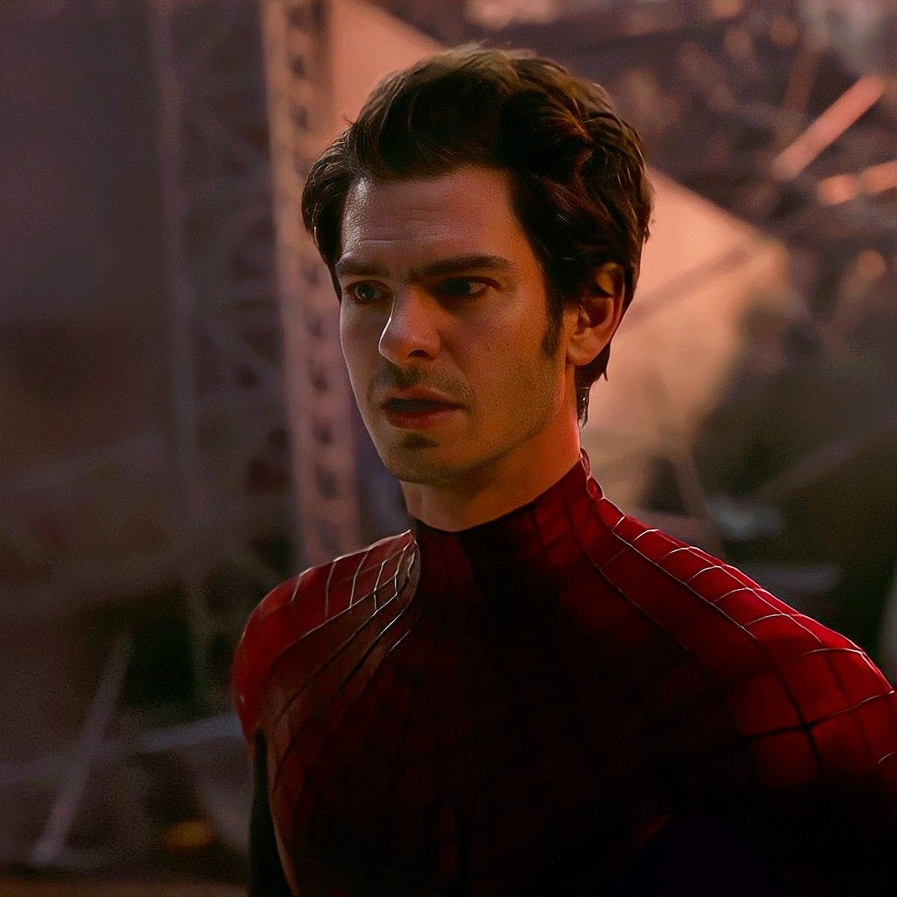

First Gen: Tobey Maguire
Second Gen: Andrew Garfield
Peter Parker also known as Spider Man was played by Andrew Garfield in three movies.
- The Amazing Spider-Man [2012]
- The Amazing Spider-Man 2 [2014]
- Spider-Man: No Way Home [2021]
These movies play a part in the Spider-Man Verse and help indicate what time line of the Spider-Verse we are in.
Here are a few facts of each movie he has played in.
- The Amazing Spider-Man
-
The Amazing Spider-Man was made in 2012, this was the first movie that he was featured in paying as Peter Parker aka. Spider-Man.
More in-depth of the topic here is a Wikipedia of the movie Visit The Amazing Spider-Man Here!
-
- The Amazing Spider-Man 2
-
Being made in 2014, The Amazing Spider-Man 2 is a sequel of the first Spider-Man Movie. Where this is the first movie known for Peter Parker aka Spider-Man to lose Gwen Stacy his girlfriend, in a Spider-Man movie.
More in-depth of the topic here is a Wikipedia of the movie Visit The Amazing Spider-Man 2 Here!
-
- Spider-Man: No Way Home
-
Spider-Man: No Way Home is a movie made in 2021, this is the most recent spider movie that features all three Spider-Mans that get to meet each other in one movie. In a specific scene, the Spider-Man played by Andrew Garfield saves Tom Hollands, Gwen Stacy having flash backs on when he couldn't save his own Gwen Stacy in his own universe.
More in-depth of the topic here is a Wikipedia of the movie Visit Spider-Man: No Way Home Here!
-
Third Gen: Tom Holland

Marvel Movies he was in
- Captain America: Civil War - 2016 (First Appearance)
- Spider-Man: Homecoming - 2017 (First Stand Alone movie).
- Avengers: Infinity War - 2018 (First crossover film with Avengers and Guardians of the Galaxy Fighting Thanos)
- Implemented security best practices to prevent vulnerabilities
- Implemented security best practices to prevent vulnerabilities